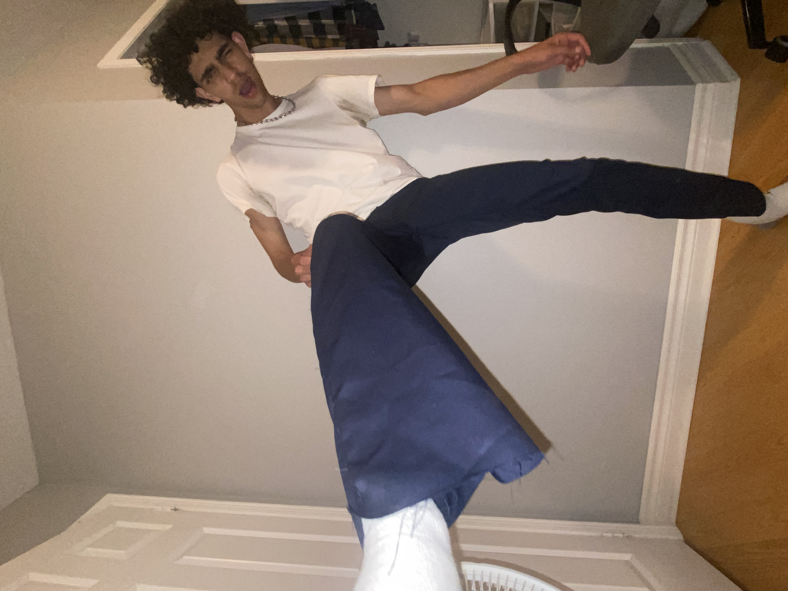
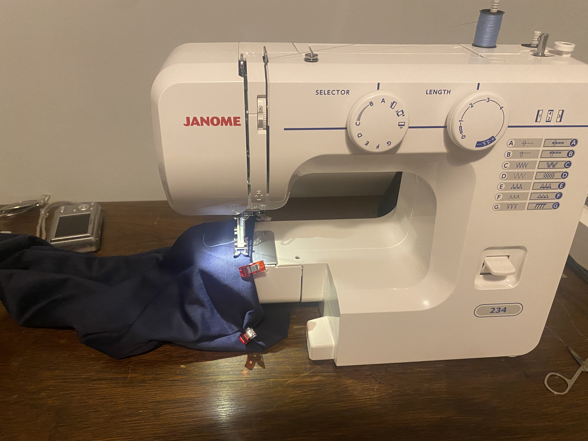

My first project on a machine was a pair of pants! I designed the pattern in SolidWorks and sewed from scratch. You can definatly tell it was my first time, but it was a very insighful and fun project!

